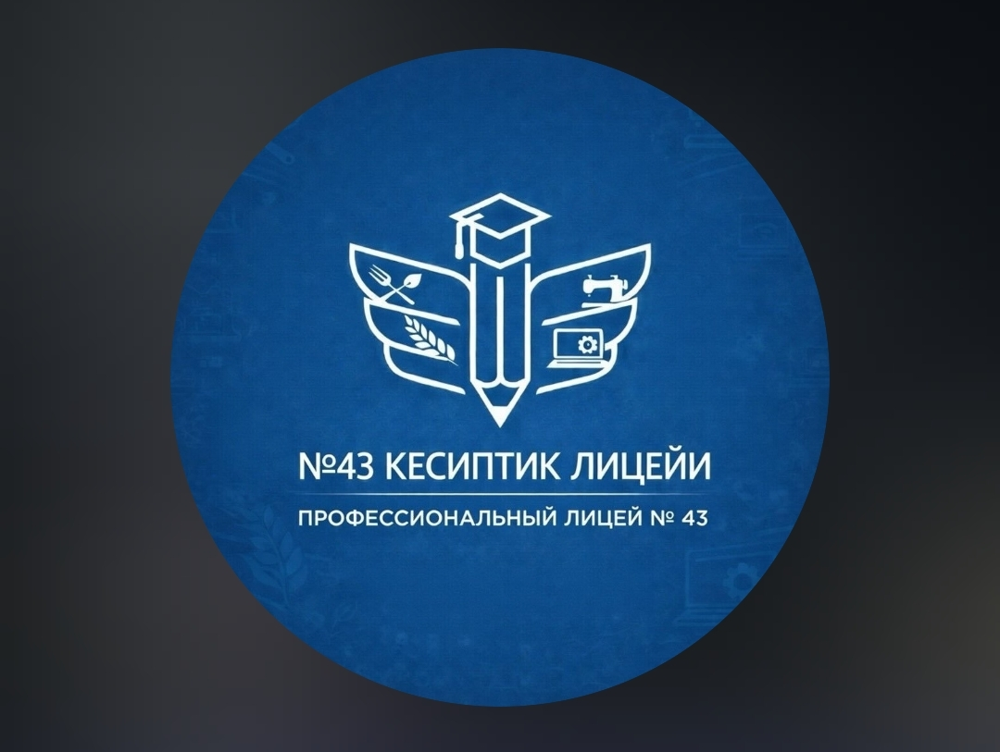

01 / РЕМОНТ
Ремонт компьютерной техники
Ремонт — это восстановление работоспособности оборудования после возникновения неисправностей. Он может включать диагностику, замену деталей, устранение повреждений и проверку компьютера после ремонта.

ПРОФЕССИОНАЛЬНЫЙ ЛИЦЕЙ №43УЧЕБНЫЙ ПРОЕКТ · IT-ИНФРАСТРУКТУРАРемонт и расходные материалы
Текущие расходы на обслуживание, ремонт и поддержание работоспособности компьютерной техники.
Это расходы, которые помогают технике каждый день оставаться в рабочем состоянии.
OpEx (Operating Expenses) — это текущие операционные расходы организации. Они необходимы для ежедневной работы оборудования, его обслуживания, ремонта и замены расходных материалов.
Текущая эксплуатация помогает поддерживать стабильную работу компьютерной техники и заранее замечать проблемы.
Поддержание работоспособности техники.
Предупреждение неисправностей.
Своевременный ремонт оборудования.
Замена изношенных комплектующих.
Обеспечение стабильной работы компьютеров.
Когда устройство выходит из строя, важно определить причину проблемы и правильно восстановить его работу.
Ремонт — это восстановление работоспособности оборудования после возникновения неисправностей. Он может включать диагностику, замену деталей, устранение повреждений и проверку компьютера после ремонта.
Диагностика помогает определить причину поломки. Специалист проверяет состояние комплектующих, работу операционной системы, температуру процессора, накопители и другие элементы компьютера.
При поломке компьютера могут потребоваться новые детали: оперативная память (RAM), блок питания, видеокарта, материнская плата, вентиляторы и кулеры, клавиатура и мышь.
Сервисное обслуживание проводится регулярно для предотвращения поломок.
Оно включает очистку компьютера от пыли, проверку вентиляторов, системы охлаждения, обновление программ и проверку состояния оборудования.
Термопаста используется для улучшения передачи тепла от процессора к системе охлаждения. Со временем её свойства могут ухудшаться, поэтому при необходимости её заменяют. Также проверяют кулеры и вентиляторы.
SSD и HDD используются для хранения информации. При неисправности или недостатке места накопитель может потребовать замены. Регулярная проверка состояния дисков помогает вовремя обнаружить возможные проблемы.
Кабели обеспечивают подключение компьютеров, мониторов, принтеров и сетевого оборудования. К расходам относятся замена повреждённых USB-, HDMI-, Ethernet-кабелей, адаптеров и разъёмов.
Расходные материалы и небольшие комплектующие необходимо своевременно пополнять, чтобы не останавливать работу кабинета.
Картриджи и тонер необходимы для работы лазерных принтеров. Когда краска или тонер заканчиваются, их необходимо заправить или заменить. Это обеспечивает качественную и бесперебойную печать документов.
Для ежедневной работы организации необходимы бумага, чернила, картриджи, тонер, средства для очистки техники и другие материалы. Их своевременная закупка помогает избежать остановки работы.
Оперативная память, блоки питания, видеокарты, материнские платы, вентиляторы, кулеры, клавиатуры и мыши могут потребоваться для замены неисправных или изношенных деталей.
Организации заранее планируют расходы на обслуживание техники, чтобы ремонт и закупка материалов не становились неожиданностью.
Для этого составляют бюджет, учитывают стоимость запасных частей, расходных материалов, работы специалистов и регулярного технического обслуживания.
Профилактика и своевременный ремонт помогают избежать серьёзных неисправностей и лишних затрат.
Продлить срок службы оборудования.
Уменьшить количество поломок.
Избежать лишних затрат.
Повысить производительность сотрудников.
Сохранить важную информацию.
Обеспечить стабильную работу организации.
Ремонт и расходные материалы — важная часть текущей эксплуатации компьютерной техники.
Своевременная замена комплектующих, регулярное обслуживание и использование качественных материалов помогают поддерживать оборудование в рабочем состоянии, экономить средства и обеспечивать бесперебойную работу организации.
Все разделы объединены общим оформлением Профессионального лицея №43.
Обновление оборудования и компьютерной инфраструктуры.
ОТКРЫТЬ РАЗДЕЛ →OPEX · ТЕКУЩАЯ ЭКСПЛУАТАЦИЯОбслуживание, диагностика и поддержание техники.
ТЕКУЩАЯ СТРАНИЦАSOFTWARE · ЛИЦЕНЗИИПокупка программ, подписки, лицензирование и киберзащита.
ОТКРЫТЬ РАЗДЕЛ →SCHOOL BUDGET · ФИНАНСЫФонд оплаты труда, коммунальные услуги и расходы на учеников.
ОТКРЫТЬ РАЗДЕЛ →Регулярное обслуживание помогает сохранить оборудование и поддерживать комфортные условия для обучения и работы.
Вернуться в начало ↑